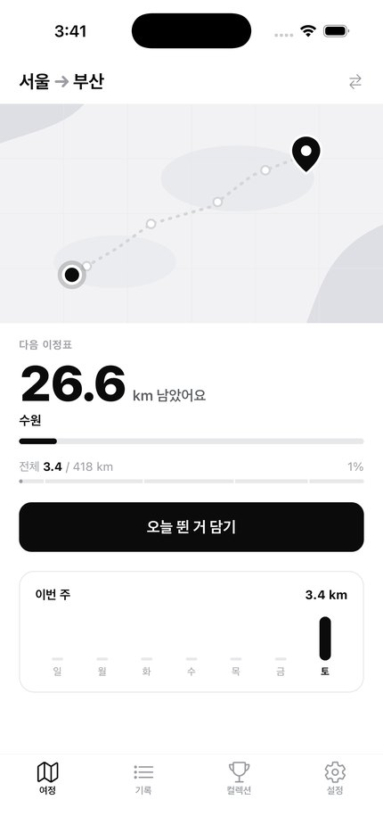
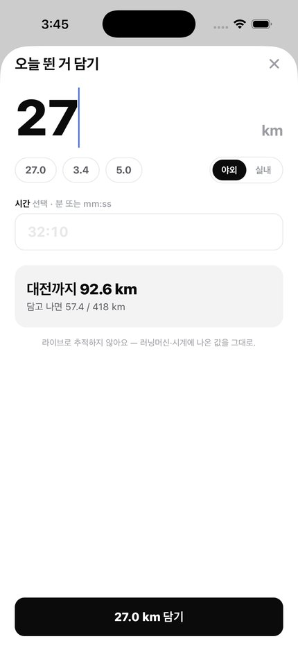
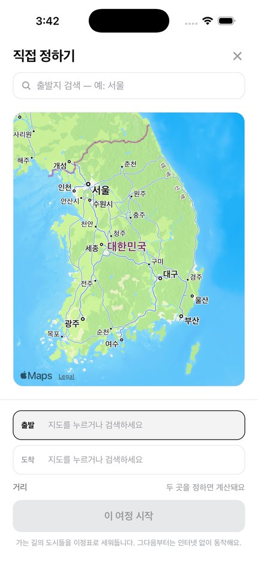
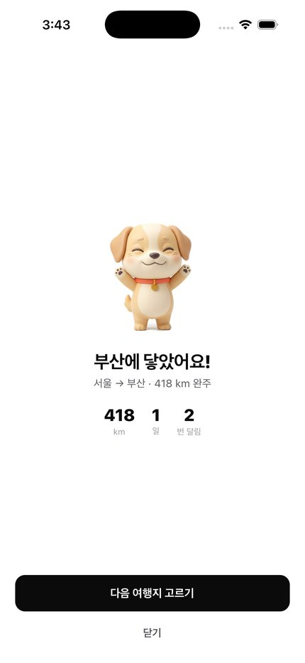
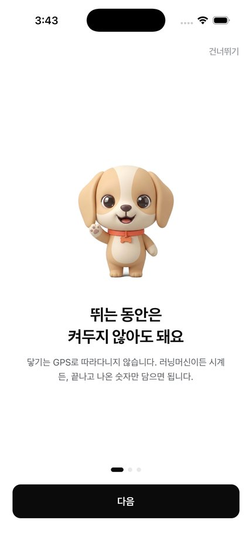
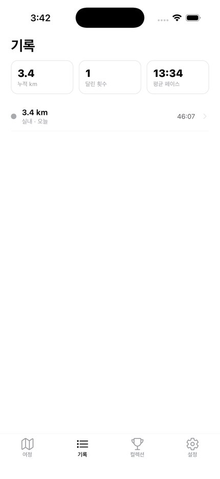
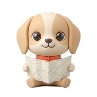
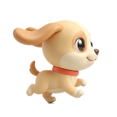

AIP Lab · iOS · 2026
라이브 추적을 하지 않는 러닝 앱. 뛰고 나서 거리만 담으면 지도 위 마커가 여행지로 나아갑니다. 기능을 더한 기록이 아니라, 무엇을 하지 않기로 했는지에 대한 기록입니다.
러닝 앱은 이미 많습니다. 다만 전부 뛰는 동안의 앱입니다 — GPS를 켜고, 페이스를 재고, 끝나면 지도를 그려줍니다. 러닝머신에서 뛰거나, 다른 앱으로 이미 재고 있거나, 그냥 숫자만 남기고 싶은 사람에게는 줄 것이 없습니다.
닿기는 반대쪽에 섭니다. 뛰고 난 다음에 여는 앱. 어디서 어떻게 뛰었든 숫자만 담으면, 그만큼 서울에서 부산으로, 파리로 나아갑니다.






전부 대가가 있는 선택이었습니다. 무엇을 얻고 무엇을 포기했는지 같이 적습니다.
문제
서울→파리는 8,966km입니다. "8% 왔어요"는 아무 감정도 주지 않고, 완주까지 3년이 걸립니다. 매일 열 이유가 없었습니다.
선택
경로 위 도시들을 이정표로 세우고, 화면의 주인공을 "다음 이정표까지 200km"로 바꿨습니다. 전체 진행률은 아래 보조로 내렸습니다.
대가
여정마다 이정표 데이터가 필요합니다. 프리셋은 손으로 넣었고, 직접 정한 곳은 만들 때 한 번 역지오코딩합니다.
문제
첫 실행에 파리를 고를 수 있었습니다. 그러면 3년짜리가 첫 경험이 되고, 이 앱의 결정적 순간인 도착을 영영 못 봅니다.
선택
첫 완주 전에는 250km 이하만 열어둡니다. 한 번 닿으면 전부 열립니다. 잠금은 딱 한 번뿐이라 첫 도착이 보상이 아니라 열쇠가 됩니다.
대가
가고 싶은 곳이 분명한 사람에게는 한 번의 우회입니다. 그래서 잠긴 카드를 누르면 왜 잠겼는지 말합니다 — 막기만 하면 고장으로 읽힙니다.
문제
프리셋 다섯 개로는 부족한데, 실지도를 쓰면 오프라인·서버 없음이라는 전제가 무너집니다.
선택
목적지를 고르는 순간에만 애플 지도를 씁니다(키·요금 없음). 거기서 얻은 좌표는 그 자리에서 거리와 0~1 폴리라인으로 바뀌어 저장되고, 이후 여정 화면은 인터넷 없이 그립니다.
대가
실제 위경도를 버리므로 나중에 진짜 지도로 보여주려면 다시 받아야 합니다. 프라이버시 쪽에서는 오히려 이득입니다.
문제
실제 좌표로 그리니 서울→파리가 오른쪽에서 왼쪽으로 흘렀습니다. 지리적으로는 맞지만 진행 마커가 왼쪽으로 가니 되돌아가는 것처럼 읽혔습니다.
선택
지도가 애초에 스타일라이즈드이므로, 동서 방향의 정확성보다 진행의 읽힘을 택했습니다. 서쪽으로 가는 여정은 좌우를 뒤집습니다. 남북 관계와 경로 모양은 그대로입니다.
대가
지도가 지리를 정확히 반영하지 않습니다. 이미 프리셋이 장식용 폴리라인이라 일관성은 오히려 좋아졌습니다.
문제
처음엔 석양 코랄이 진행·CTA·강조에 두루 쓰였습니다. 색이 여기저기 있으니 정작 "내가 나아갔다"는 사건이 눈에 안 들어왔습니다.
선택
UI를 흑백으로 내리고 색은 마스코트에만 남겼습니다. 앱에서 유일한 색이라 시선이 자연스럽게 캐릭터로 갑니다. 목걸이의 코랄이 원래 정체성을 물려받았습니다.
대가
색이 하던 일(진행 표시)을 채움과 대비로 옮겨야 했습니다. 진행 바가 회색끼리라 안 보이거나, 선택 상태가 흐릿해지는 문제를 하나씩 고쳤습니다.
문제
9 대신 25를 치면 그대로 굳었습니다. 3년짜리 여정에서 잘못 담은 값을 뺄 방법이 없으면 여정 전체가 거짓이 됩니다.
선택
기록 수정·삭제를 넣고, 기록이 바뀔 때마다 여정 상태를 다시 계산합니다. 도착하게 만든 기록을 지우면 도착도 취소됩니다.
대가
상태 계산이 한 곳(reconcile())에 모여야 했습니다. 흩어지면 완주 표시만 남고 거리는 모자란 여정이 생깁니다.
벡터로 직접 그려봤지만 검은 실루엣에 점 하나짜리 눈이라 캐릭터가 아니라 픽토그램이었습니다. 거북이·펭귄·지도 핀·우주비행사까지 열 가지 넘게 시안을 낸 끝에 강아지로 정했습니다 — 러닝의 실제 동반자라 "같이 가는 존재"가 억지가 아닙니다.
포즈를 텍스트로 다시 뽑으면 미묘하게 다른 개가 나옵니다. 그래서 첫 컷을 참조 이미지로 함께 보내 얼굴·비율·목걸이를 고정한 채 자세만 바꿨습니다. 그렇게 12포즈.


RN 0.76 이 고정한 fmt 11.0.2 가 새 Clang 에서 consteval 때문에 깨집니다(fmt 11.1 에서 고쳐진 업스트림 버그). base.h 가 스위치를 무조건 정의해 -D 로는 못 끄기에, 헤더에 외부 정의 우선 탈출구를 넣어 우회했습니다. ios/ 는 gitignore 라 Podfile 수정은 clone 하면 사라지므로 config plugin 으로 만들어 prebuild 마다 자동 적용되게 했습니다.
파일도 에셋 카탈로그도 빌드된 Assets.car 까지 새 이미지인데 화면만 예전 것이 나왔습니다. 클린 빌드도 앱 삭제도 소용없었습니다. iOS 가 런치 이미지를 SplashBoard 스냅샷으로 캐시하는데 앱 컨테이너마다 따로 쌓여서, 전부 지우고 시뮬레이터를 재부팅해야 반영됐습니다.
배경을 조금만 느슨하게 잡으면 크림색 머리가 파이고, 조이면 그림자가 흰 얼룩으로 남습니다. 처음엔 그림자를 '검정+투명도'로 살렸는데 바탕색이 바뀌면 얼룩이 보여서 결국 지웠습니다 — 평평한 UI 에 3D 접지 그림자는 필요 없었습니다. 포즈별 기준값과 확인 방법(흰색·회색·마젠타·검정 네 바탕)을 문서에 남겼습니다.
원격에서 작업하느라 화면을 볼 수 없는 구간이 있었습니다. 데스크톱 앱은 디버거로 붙어 클릭을 넣어 전체 흐름을 확인했고, iOS 는 시뮬레이터에 터치를 보낼 수단이 없어 simctl 스크린샷과 SQLite 를 직접 읽어 상태를 검증했습니다. 사용자가 남긴 데이터에서 여정이 셋 다 active 로 남는 버그를 찾아낸 것도 이 방식이었습니다.
서버가 없습니다. 계정도 없습니다. 인프라 비용은 0원이고, 지도는 iOS 에 내장된 애플 지도라 키도 요금도 들지 않습니다.